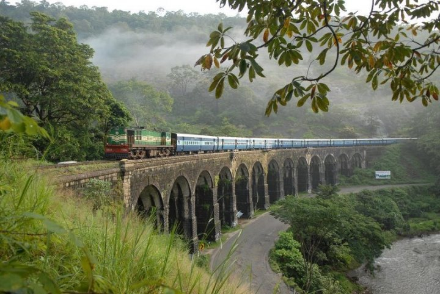
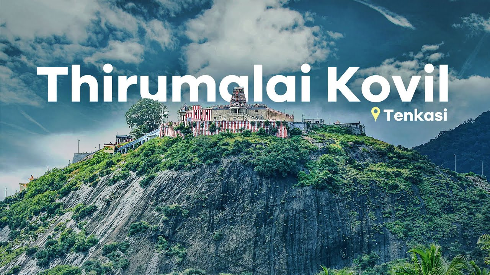
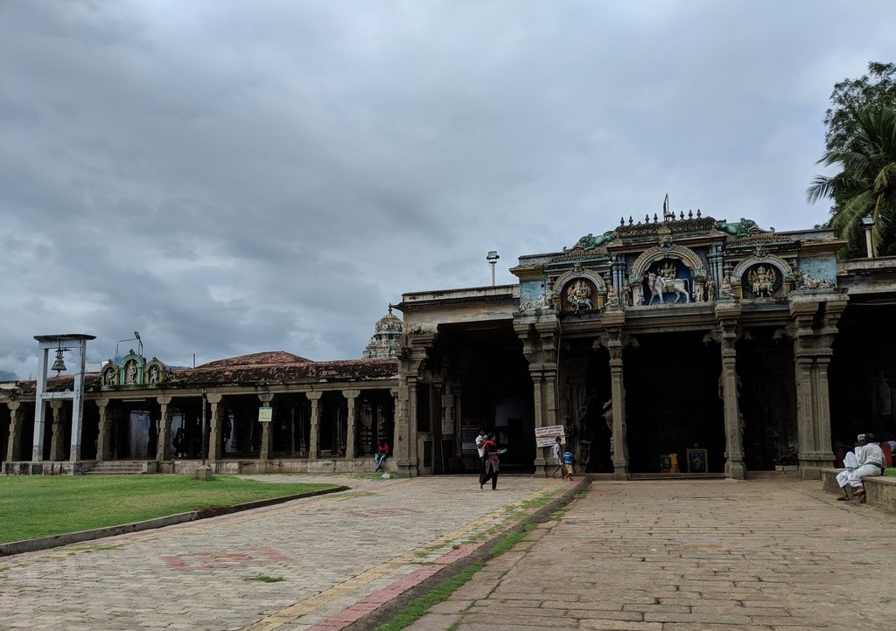
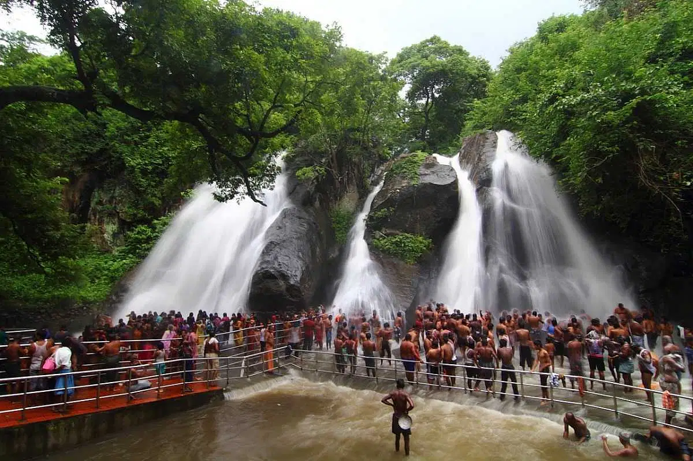

Thenmala
Thenmala is India’s first planned eco-tourism destination, located in the Kollam district of Kerala. This picturesque locale offers visitors a harmonious blend of natural beauty, adventure, and cultural experiences.
Attractions and Activities:
- Adventure Zone: Trekking, mountain biking, and rock climbing.
- Leisure Zone: Serene pathways through sculpted gardens, ideal for relaxation and nature walks.
- Butterfly Safari: A dedicated garden attracts numerous butterfly species, offering a mesmerizing experience for nature enthusiasts.
- Musical Fountain: Water show with music and lights.
- Boating: Scenic boat rides on the Thenmala reservoir.
Accessibility:
Well-connected by road and rail, making it easily accessible from our resort. The nearest railway station is Thenmala Railway Station. For those traveling by road, Thenmala is connected by well-maintained highways, ensuring a smooth journey.
Thirumalai Kovil
Located in Panpoli village near Sengottai, Tamil Nadu, this hilltop temple is dedicated to Lord Murugan. Perched at an elevation of approximately 400 meters, the temple offers panoramic views of the surrounding Western Ghats.
Historical Significance:
The temple is believed to have been constructed during the Pandya dynasty. Saint Arunagirinathar, a renowned Tamil poet and devotee of Lord Murugan, has praised this shrine in his hymns.
Architecture:
Originally accessed by 624 steps; now accessible via a hill road.The temple complex includes a shrine for Goddess Thirumalai Kaali Amman and is surrounded by lush coconut plantations and picturesque villages.
Festivals:
Major celebration: Thai Pusam (January-February).
Visitor Info:
- Timings: 6:00 AM - 1:30 PM & 4:30 PM - 8:15 PM
- Accessibility: 10 km from Shencottai; Frequent buses available.
- Accommodation: Nearby towns: Tenkasi, Shenkottai, Courtallam.
Kasi Viswanathar Temple, Tenkasi
Dedicated to Lord Shiva, worshipped here as Kasi Viswanathar, and Parvathi, this 13th-century temple is known as the "Kasi of the South."
Highlights:
- Historical: Built by the 13th Century Pandya king Parakrama Pandyan; Vedic and Puranic traditions recorded.
- Architecture: Features a 180-foot, seven-tiered gopuram with intricate carvings.
Festivals:
- Maasi Maham (Feb-Mar)
- Thirukalyanam (Oct-Nov)
- Navarathri, Thaipusam
Visiting Info:
- Timings: 6:00 AM - 12:00 PM & 4:00 PM - 8:30 PM
- Location: 1.5 km from Tenkasi Bus Station; 5 km from Courtallam
Waterfalls Around Courtallam
- Five Falls(Aintharuvi): Splits into five streams, resembling a cobra’s head.
- Old Courtallam Falls(Pazhaya Courtallam): A 200-ft fall with gentle steps; peaceful ambiance.
- Shenbaga Devi Falls: 42-ft fall amidst forests with temple and ancient inscriptions.
- Honey Falls(Thenaruvi): Remote, clear waters, reached by forest trek.
- Tiger Falls(Puliaruvi): Smaller, quiet fall near the main town.
- Small Falls(Chittaruvi): Safe and ideal for children and the elderly.
- Fruit Garden Falls (Pazhathotta Aruvi): Surrounded by orchards; also called Orchard Falls.
- Palaruvi Falls: In Kerala; 91 meters high, known as "Stream of Milk."
Note: Check local conditions before visiting, especially during monsoon.